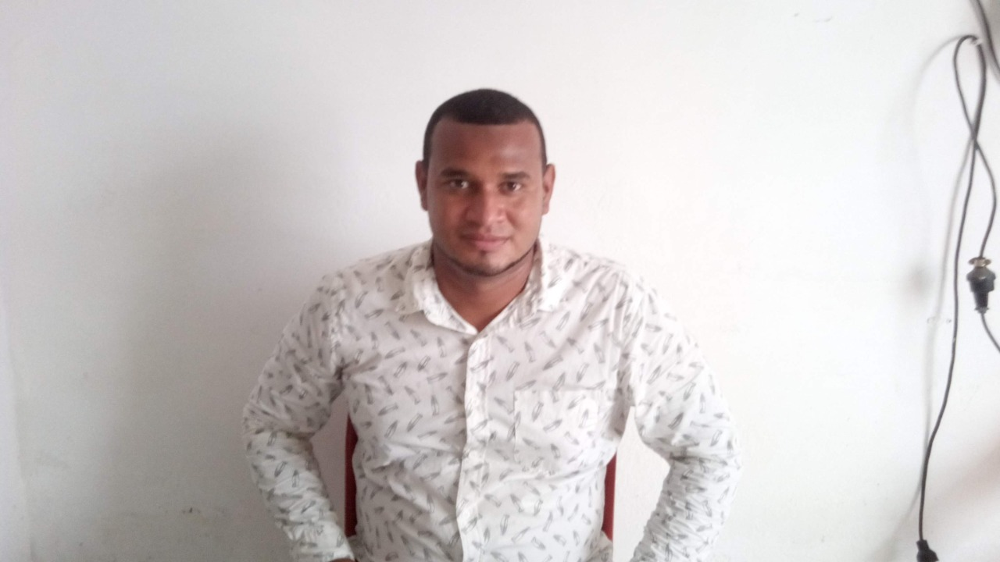

Sobre Mí
Soy Carlos Alfonso Machacon Garcia, Ingeniero y Tecnólogo en sistemas con experiencia en digitación de datos, servicio al cliente, mantenimiento de computadores, desarrollo de software basado en lenguaje java.net, diseño y creación de página web, javascript.ips, servicios web en aspx, manejo de motores de base de datos, conocimientos básicos de electrónica y tecnología con dos Años de experiencia liferay, desarrollo de aplicaciones web con JPA, EJB; JSF y primefaces, además, Bootstrap, frontend, instalación de cámaras de seguridad IP y CCTV.
Proyectos
Creacion de plataforma llamada meditech
Meditech es una plataforma diseñada para la gestión integral de servicios médicos. Permite registrar pacientes y especialistas, asignar citas con los especialistas, gestionar la historia clínica de los pacientes y generar recetas médicas de manera eficiente. Este proyecto busca optimizar los procesos administrativos y mejorar la experiencia tanto de los pacientes como de los profesionales de la salud.
Gestion de alquiler puerta cartagena
Este proyecto consiste en un sistema de gestión de alquileres desarrollado utilizando una base de datos MySQL para el almacenamiento de información, un frontend construido con Vue.js para una experiencia de usuario interactiva, y un backend implementado con Spring Tool Suite para manejar los servicios. Además, se utilizó Postman para probar y validar los servicios REST. El sistema permite gestionar propiedades, inquilinos, contratos de alquiler y pagos de manera eficiente.
Contactame
Email: carlosmachacon2010@hotmail.com
Celular: +57 3114113999
WhatsApp: +57 3114113999